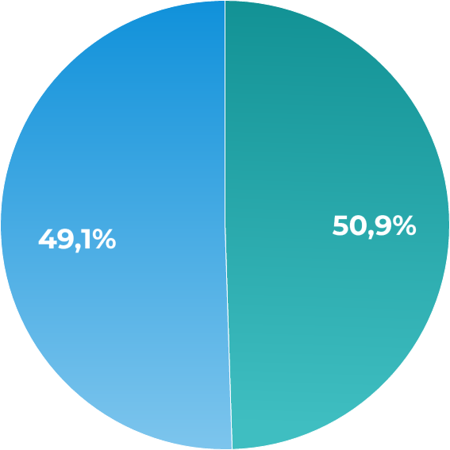
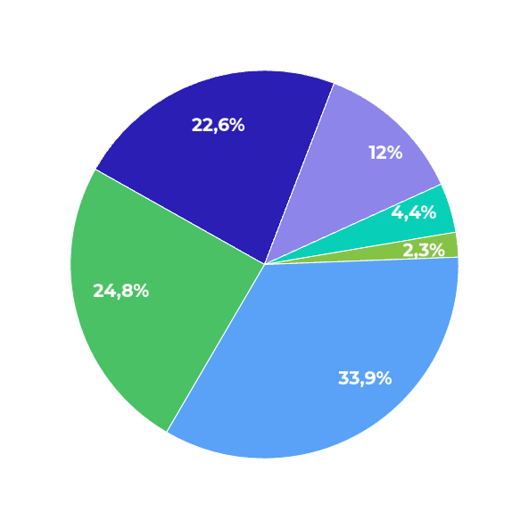

ЕРГОФЕРОН
дозволяє виключити прийом засобівсимптоматичної терапії у 49% пацієнтів
ЧАСТКА ПАЦІЄНТІВ, ЩО ОТРИМУВАЛИ ТА НЕ ОТРИМУВАЛИ ДОДАТКОВО ІНШІ ЛІКАРСЬКІ ЗАСОБИ

53% засоби, що діють на респіраторну систему

14% антипіретики та анальгетики
Препарати для лікування захворювань горла
Антигістамінні препарати
Препарати для лікування обструктивних
захворювань дихальних шляхів
захворювань дихальних шляхів
Інші препарати для лікування
захворювань дихальної системи
захворювань дихальної системи
Деконгестанти
Протикашльові і відхаркувальні препарати
33% інші
Отримували Ергоферон у
вигляді монотерапії
вигляді монотерапії
Отримували Ергоферон в
комбінації з іншими
лікарськими засобами
комбінації з іншими
лікарськими засобами